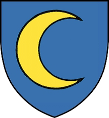
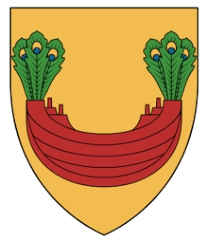

23474 Jörgen Knudsen Månesköld till Dalshult, Halland
† 1565-10-20 Axtorna (N) 20 km söder om Falkenberg
† 1565-10-20 Axtorna (N) 20 km söder om Falkenberg

46948 Knud Jensen Jude till Arlöse (Månesköld af Norge)
* omkring 1500
† 1567 Arlösa, Enslöv (N)
Landsdomare i södra Halland
Blev ca 67 år
* omkring 1500
† 1567 Arlösa, Enslöv (N)
Landsdomare i södra Halland
Blev ca 67 år

46949 Anna Pedersdotter (Rommel)
* 1505 Halland (N)
† efter 1532 Olsnäs, Stenkyrka, Tjörn (O)
Blev minst 27 år
* 1505 Halland (N)
† efter 1532 Olsnäs, Stenkyrka, Tjörn (O)
Blev minst 27 år
93898 Peder Steffensen Romel
* omkring 1430
† 1515-07-29
Väpnare, Landsdomare i södra Halland
Blev ca 85 år
* omkring 1430
† 1515-07-29
Väpnare, Landsdomare i södra Halland
Blev ca 85 år
187796 Steffen Pedersen Romel
* omkring 1390
Landsdomare i södra Halland
* omkring 1390
Landsdomare i södra Halland

187797 Cecilia Abrahamsdotter Bonde (Baad av Halland)
* omkring 1407
* omkring 1407

93899 Kristina Björnsdotter (Krumme)
* före 1490
† efter 1515 Fyllinge, Snöstorp (N)
Blev minst 26 år
* före 1490
† efter 1515 Fyllinge, Snöstorp (N)
Blev minst 26 år
187798 Björn Nilsson (Krumme)
* omkring 1445
† mellan 1497 och 1498
Häradshövding i Östergötland, Fogde i Stockholm
Blev ca 52 år
* omkring 1445
† mellan 1497 och 1498
Häradshövding i Östergötland, Fogde i Stockholm
Blev ca 52 år